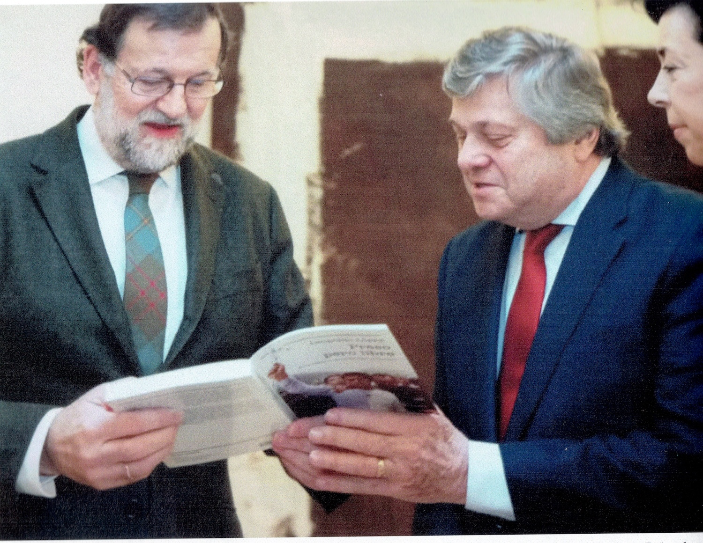
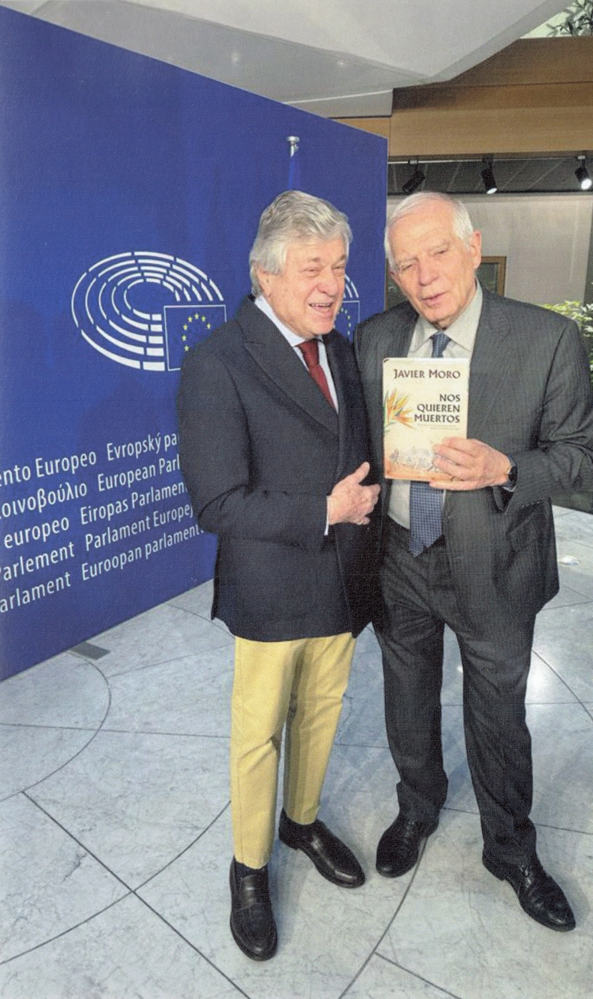
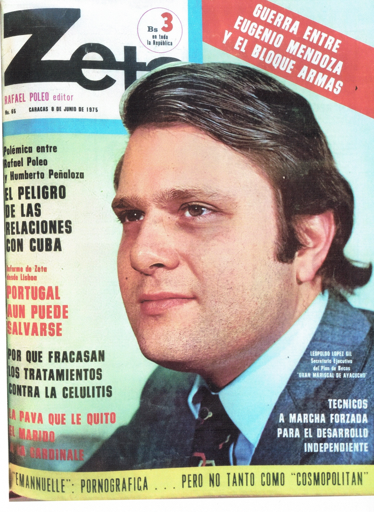

Cuatro generaciones comprometidas con la democracia venezolana
Presentación en el Parlamento Europeo30 de septiembre de 2026 · De 12:00 a 13:00
Biblioteca del Parlamento Europeo
Bruselas
Entrada libre hasta completar el aforo
Presentado por Esteban González Pons
Eurodiputado y vicepresidente del Parlamento Europeo
Con la participación de Antonio López Istúriz
Eurodiputado
Leopoldo López Gil presenta en el Parlamento Europeo su libro La vida sigue, la lucha continúa. El encuentro tiene un significado especial para el autor, que regresa a la institución de la que formó parte como eurodiputado entre 2019 y 2024.
El acto es una ocasión para reflexionar sobre los vínculos entre Europa y América Latina y sobre los retos políticos, sociales y educativos que afrontan las nuevas generaciones. López Gil abordará algunos de los grandes temas de la obra: la historia de Venezuela, la memoria y el compromiso entre generaciones, el papel de la educación en el desarrollo y la reconstrucción de los países, y la defensa de la democracia y del Estado de derecho.
He querido escribir sobre cómo el compromiso con la libertad se transmite de generación en generación, y sobre el papel que jugó la educación —especialmente el Programa de Becas Gran Mariscal de Ayacucho— en la construcción de la Venezuela que conocí y en la que creí. Este libro no es un ejercicio de nostalgia, sino la necesidad de dejar constancia de una estirpe de venezolanos que participaron activamente en la tarea de construir un país.
— Leopoldo López Gil
Un recorrido histórico que abarca más de dos siglos de historia venezolana.
Click para saber másEl libro documenta la participación de la familia López en los momentos clave de Venezuela: desde las luchas independentistas, pasando por el exilio durante la dictadura de Juan Vicente Gómez, la construcción democrática de 1958, hasta la crisis actual y la diáspora venezolana.
Testimonio del Programa de Becas Gran Mariscal de Ayacucho.
Click para saber másCreado en 1974, el programa envió miles de jóvenes venezolanos a las mejores universidades del mundo. Los "Ayacuchos" representaron una generación de profesionales que regresaron con la esperanza de construir una Venezuela próspera y moderna.
Material hemerográfico y fotografías del archivo personal familiar.
Click para saber másEl libro incluye documentos originales de la Hemeroteca Nacional de Caracas y fotografías del archivo personal de la familia López que no se habían publicado antes, convirtiendo la obra en un documento histórico de primer orden.
Testigo de la transformación vertiginosa de Venezuela.
Click para saber másEl autor narra cómo Venezuela pasó de 4 millones de habitantes y solo 8.000 estudiantes universitarios a diseñar una ciudad universitaria para 15.000 que terminaría albergando más de 50.000. "El país no creció de forma lineal: dio saltos vertiginosos."
"La vida sigue, la lucha continúa": un mensaje de continuidad generacional.
Click para saber más"Comprendí que la memoria no es solo recuerdo, es proyección. Lo vivido es comprensión, orden y transmisión de lo aprendido. El compromiso con el país no es una decisión circunstancial, sino una forma de vida que se transmite de generación en generación."
Aquí juramentándome como presidente de Fundayacucho por segunda vez en el Salón de los Espejos del Palacio de Miraflores. Mucha agua había corrido desde aquella primera experiencia en que era un joven de 29 años. En esta ocasión, febrero de 1989, el presidente Pérez me dijo: "Yo seré recordado más por la Fundación Ayacucho que por la nacionalización del petróleo".

Al presidente Mariano Rajoy le entregamos el libro "Preso pero Libre" en el palacio de la Moncloa. Mariano Rajoy fue el primer presidente en recibir a Lilian para conocer el estado de Leopoldo en prisión. Nos otorgó la nacionalidad, un gesto del que siempre estaremos agradecidos. Él sigue pendiente de Venezuela y de sus acontecimientos.

A Josep Borrell le hice entrega del libro de Javier Moro sobre Leopoldo y Lilian. Nos reunimos, como tantas veces, en la sede del Parlamento Europeo. Entonces Borrell era Alto Representante de la Comisión Europea. Borrell siempre mostró preocupación por la situación de los derechos humanos en Venezuela.
Mi relación con José Manuel García-Margallo no se ha limitado a los vínculos de índole políticos. José Manuel siempre ha sido una guía para la comprensión de España y su historia política y cultural. Hemos compartido diversas misiones del Parlamento Europeo.

En revista Zeta, 8 de junio de 1975.
300 páginas que recorren la historia de Venezuela desde el siglo XVIII hasta el presente, entrelazando memoria familiar y lucha política.
Con material hemerográfico histórico de la Hemeroteca Nacional de Caracas, el libro documenta cómo tres generaciones participaron activamente en la construcción democrática del país.
Biblioteca del Parlamento Europeo, Bruselas · De 12:00 a 13:00
Presentado por Esteban González Pons, eurodiputado y vicepresidente del Parlamento Europeo, con la participación del eurodiputado Antonio López Istúriz. Entrada libre hasta completar el aforo.
Más información →Parque del Retiro, Madrid
Firma de ejemplares del libro.
Ateneo de Madrid
Con las intervenciones de Vidal Pérez Herrero, José Manuel García-Margallo y Paula Quinteros.
Ver en YouTube →Descarga la reseña de prensa con información sobre el libro, el autor, el contexto histórico y la ficha técnica.